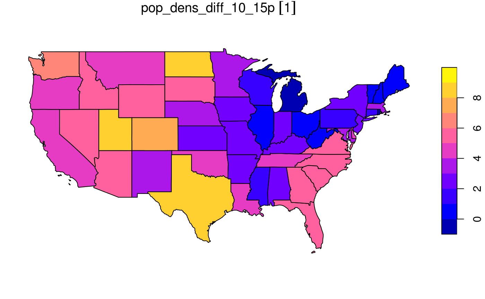
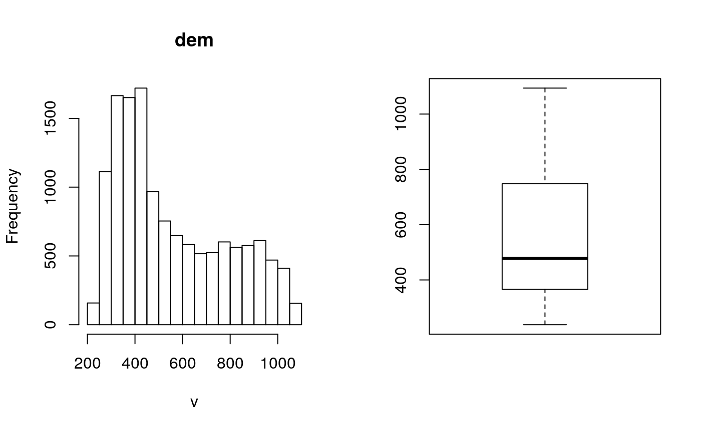
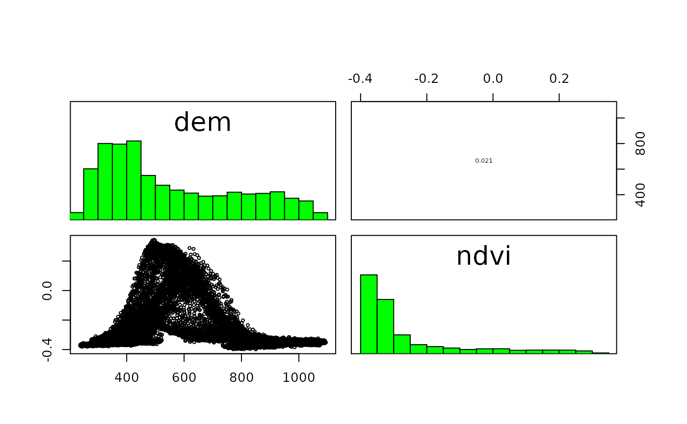

vignettes/solutions03.Rmd
solutions03.RmdThe solutions assume the following packages are attached (other packages will be attached when needed):
For these exercises we will use the us_states and us_states_df datasets from the spData package:
us_states is a spatial object (of class sf), containing geometry and a few attributes (including name, region, area, and population) of states within the contiguous United States. us_states_df is a data frame (of class data.frame) containing the name and additional variables (including median income and poverty level, for years 2010 and 2015) of US states, including Alaska, Hawaii and Puerto Rico. The data comes from the US Census Bureau, and is documented in ?us_states and ?us_states_df.
us_states_name that contains only the NAME column from the us_states object. What is the class of the new object and what makes it geographic?sf and data.frame: it has 2 classes.sf class that makes in geographic.sf_column) and the geometry column (such as bbox, crs) that make it geographic.attributes(us_states_name)
#> $names
#> [1] "NAME" "geometry"
#>
#> $row.names
#> [1] 1 2 3 4 5 6 7 8 9 10 11 12 13 14 15 16 17 18 19 20 21 22 23
#> [24] 24 25 26 27 28 29 30 31 32 33 34 35 36 37 38 39 40 41 42 43 44 45 46
#> [47] 47 48 49
#>
#> $class
#> [1] "sf" "data.frame"
#>
#> $sf_column
#> [1] "geometry"
#>
#> $agr
#> NAME
#> <NA>
#> Levels: constant aggregate identity
attributes(us_states_name$geometry)
#> $n_empty
#> [1] 0
#>
#> $crs
#> Coordinate Reference System:
#> EPSG: 4269
#> proj4string: "+proj=longlat +datum=NAD83 +no_defs"
#>
#> $class
#> [1] "sfc_MULTIPOLYGON" "sfc"
#>
#> $precision
#> [1] 0
#>
#> $bbox
#> xmin ymin xmax ymax
#> -124.70415 24.55868 -66.98240 49.38436us_states object which contain population data. Obtain the same result using a different command (bonus: try to find three ways of obtaining the same result). Hint: try to use helper functions, such as contains or starts_with from dplyr (see ?contains).us_states %>% dplyr::select(total_pop_10, total_pop_15)
#> Simple feature collection with 49 features and 2 fields
#> geometry type: MULTIPOLYGON
#> dimension: XY
#> bbox: xmin: -124.7042 ymin: 24.55868 xmax: -66.9824 ymax: 49.38436
#> epsg (SRID): 4269
#> proj4string: +proj=longlat +datum=NAD83 +no_defs
#> First 10 features:
#> total_pop_10 total_pop_15 geometry
#> 1 4712651 4830620 MULTIPOLYGON (((-88.20006 3...
#> 2 6246816 6641928 MULTIPOLYGON (((-114.7196 3...
#> 3 4887061 5278906 MULTIPOLYGON (((-109.0501 4...
#> 4 3545837 3593222 MULTIPOLYGON (((-73.48731 4...
#> 5 18511620 19645772 MULTIPOLYGON (((-81.81169 2...
#> 6 9468815 10006693 MULTIPOLYGON (((-85.60516 3...
#> 7 1526797 1616547 MULTIPOLYGON (((-116.916 45...
#> 8 6417398 6568645 MULTIPOLYGON (((-87.52404 4...
#> 9 2809329 2892987 MULTIPOLYGON (((-102.0517 4...
#> 10 4429940 4625253 MULTIPOLYGON (((-92.01783 2...
# or
us_states %>% dplyr::select(starts_with("total_pop"))
#> Simple feature collection with 49 features and 2 fields
#> geometry type: MULTIPOLYGON
#> dimension: XY
#> bbox: xmin: -124.7042 ymin: 24.55868 xmax: -66.9824 ymax: 49.38436
#> epsg (SRID): 4269
#> proj4string: +proj=longlat +datum=NAD83 +no_defs
#> First 10 features:
#> total_pop_10 total_pop_15 geometry
#> 1 4712651 4830620 MULTIPOLYGON (((-88.20006 3...
#> 2 6246816 6641928 MULTIPOLYGON (((-114.7196 3...
#> 3 4887061 5278906 MULTIPOLYGON (((-109.0501 4...
#> 4 3545837 3593222 MULTIPOLYGON (((-73.48731 4...
#> 5 18511620 19645772 MULTIPOLYGON (((-81.81169 2...
#> 6 9468815 10006693 MULTIPOLYGON (((-85.60516 3...
#> 7 1526797 1616547 MULTIPOLYGON (((-116.916 45...
#> 8 6417398 6568645 MULTIPOLYGON (((-87.52404 4...
#> 9 2809329 2892987 MULTIPOLYGON (((-102.0517 4...
#> 10 4429940 4625253 MULTIPOLYGON (((-92.01783 2...
# or
us_states %>% dplyr::select(contains("total_pop"))
#> Simple feature collection with 49 features and 2 fields
#> geometry type: MULTIPOLYGON
#> dimension: XY
#> bbox: xmin: -124.7042 ymin: 24.55868 xmax: -66.9824 ymax: 49.38436
#> epsg (SRID): 4269
#> proj4string: +proj=longlat +datum=NAD83 +no_defs
#> First 10 features:
#> total_pop_10 total_pop_15 geometry
#> 1 4712651 4830620 MULTIPOLYGON (((-88.20006 3...
#> 2 6246816 6641928 MULTIPOLYGON (((-114.7196 3...
#> 3 4887061 5278906 MULTIPOLYGON (((-109.0501 4...
#> 4 3545837 3593222 MULTIPOLYGON (((-73.48731 4...
#> 5 18511620 19645772 MULTIPOLYGON (((-81.81169 2...
#> 6 9468815 10006693 MULTIPOLYGON (((-85.60516 3...
#> 7 1526797 1616547 MULTIPOLYGON (((-116.916 45...
#> 8 6417398 6568645 MULTIPOLYGON (((-87.52404 4...
#> 9 2809329 2892987 MULTIPOLYGON (((-102.0517 4...
#> 10 4429940 4625253 MULTIPOLYGON (((-92.01783 2...us_states %>%
filter(REGION == "Midwest")
#> Simple feature collection with 12 features and 6 fields
#> geometry type: MULTIPOLYGON
#> dimension: XY
#> bbox: xmin: -104.0577 ymin: 35.99568 xmax: -80.51869 ymax: 49.38436
#> epsg (SRID): 4269
#> proj4string: +proj=longlat +datum=NAD83 +no_defs
#> First 10 features:
#> GEOID NAME REGION AREA total_pop_10 total_pop_15
#> 1 18 Indiana Midwest 93648.4 [km^2] 6417398 6568645
#> 2 20 Kansas Midwest 213037.1 [km^2] 2809329 2892987
#> 3 27 Minnesota Midwest 218566.5 [km^2] 5241914 5419171
#> 4 29 Missouri Midwest 180716.3 [km^2] 5922314 6045448
#> 5 38 North Dakota Midwest 183177.8 [km^2] 659858 721640
#> 6 46 South Dakota Midwest 199766.8 [km^2] 799462 843190
#> 7 17 Illinois Midwest 145993.1 [km^2] 12745359 12873761
#> 8 19 Iowa Midwest 145743.7 [km^2] 3016267 3093526
#> 9 26 Michigan Midwest 151119.0 [km^2] 9952687 9900571
#> 10 31 Nebraska Midwest 200272.3 [km^2] 1799125 1869365
#> geometry
#> 1 MULTIPOLYGON (((-87.52404 4...
#> 2 MULTIPOLYGON (((-102.0517 4...
#> 3 MULTIPOLYGON (((-97.22904 4...
#> 4 MULTIPOLYGON (((-95.76565 4...
#> 5 MULTIPOLYGON (((-104.0487 4...
#> 6 MULTIPOLYGON (((-104.0577 4...
#> 7 MULTIPOLYGON (((-91.41942 4...
#> 8 MULTIPOLYGON (((-96.45326 4...
#> 9 MULTIPOLYGON (((-85.63002 4...
#> 10 MULTIPOLYGON (((-104.0531 4...- Belong to the West region, have an area below 250,000 km^2^ *and* in 2015 a population greater than 5,000,000 residents (hint: you may need to use the function `units::set_units()` or `as.numeric()`).us_states %>% filter(REGION == "West", AREA < units::set_units(250000, km^2),total_pop_15 > 5000000)
#> Simple feature collection with 1 feature and 6 fields
#> geometry type: MULTIPOLYGON
#> dimension: XY
#> bbox: xmin: -124.7042 ymin: 45.54774 xmax: -116.916 ymax: 49.00236
#> epsg (SRID): 4269
#> proj4string: +proj=longlat +datum=NAD83 +no_defs
#> GEOID NAME REGION AREA total_pop_10 total_pop_15
#> 1 53 Washington West 175436 [km^2] 6561297 6985464
#> geometry
#> 1 MULTIPOLYGON (((-122.7699 4...
# or
us_states %>% filter(REGION == "West", as.numeric(AREA) < 250000,total_pop_15 > 5000000)
#> Simple feature collection with 1 feature and 6 fields
#> geometry type: MULTIPOLYGON
#> dimension: XY
#> bbox: xmin: -124.7042 ymin: 45.54774 xmax: -116.916 ymax: 49.00236
#> epsg (SRID): 4269
#> proj4string: +proj=longlat +datum=NAD83 +no_defs
#> GEOID NAME REGION AREA total_pop_10 total_pop_15
#> 1 53 Washington West 175436 [km^2] 6561297 6985464
#> geometry
#> 1 MULTIPOLYGON (((-122.7699 4...- Belong to the South region, had an area larger than 150,000 km^2^ or a total population in 2015 larger than 7,000,000 residents.us_states %>% filter(REGION == "South", AREA > units::set_units(150000, km^2), total_pop_15 > 7000000)
#> Simple feature collection with 3 features and 6 fields
#> geometry type: MULTIPOLYGON
#> dimension: XY
#> bbox: xmin: -106.6359 ymin: 24.55868 xmax: -80.03136 ymax: 36.50044
#> epsg (SRID): 4269
#> proj4string: +proj=longlat +datum=NAD83 +no_defs
#> GEOID NAME REGION AREA total_pop_10 total_pop_15
#> 1 12 Florida South 151052.0 [km^2] 18511620 19645772
#> 2 13 Georgia South 152725.2 [km^2] 9468815 10006693
#> 3 48 Texas South 687714.3 [km^2] 24311891 26538614
#> geometry
#> 1 MULTIPOLYGON (((-81.81169 2...
#> 2 MULTIPOLYGON (((-85.60516 3...
#> 3 MULTIPOLYGON (((-103.0024 3...
# or
us_states %>% filter(REGION == "South", as.numeric(AREA) > 150000, total_pop_15 > 7000000)
#> Simple feature collection with 3 features and 6 fields
#> geometry type: MULTIPOLYGON
#> dimension: XY
#> bbox: xmin: -106.6359 ymin: 24.55868 xmax: -80.03136 ymax: 36.50044
#> epsg (SRID): 4269
#> proj4string: +proj=longlat +datum=NAD83 +no_defs
#> GEOID NAME REGION AREA total_pop_10 total_pop_15
#> 1 12 Florida South 151052.0 [km^2] 18511620 19645772
#> 2 13 Georgia South 152725.2 [km^2] 9468815 10006693
#> 3 48 Texas South 687714.3 [km^2] 24311891 26538614
#> geometry
#> 1 MULTIPOLYGON (((-81.81169 2...
#> 2 MULTIPOLYGON (((-85.60516 3...
#> 3 MULTIPOLYGON (((-103.0024 3...us_states dataset? What was the minimum and maximum total population in 2015?us_states %>% summarize(total_pop = sum(total_pop_15),
min_pop = min(total_pop_15),
max_pop = max(total_pop_15))
#> Simple feature collection with 1 feature and 3 fields
#> geometry type: MULTIPOLYGON
#> dimension: XY
#> bbox: xmin: -124.7042 ymin: 24.55868 xmax: -66.9824 ymax: 49.38436
#> epsg (SRID): 4269
#> proj4string: +proj=longlat +datum=NAD83 +no_defs
#> total_pop min_pop max_pop geometry
#> 1 314375347 579679 38421464 MULTIPOLYGON (((-81.81169 2...us_states %>%
group_by(REGION) %>%
summarize(nr_of_states = n())
#> Simple feature collection with 4 features and 2 fields
#> geometry type: MULTIPOLYGON
#> dimension: XY
#> bbox: xmin: -124.7042 ymin: 24.55868 xmax: -66.9824 ymax: 49.38436
#> epsg (SRID): 4269
#> proj4string: +proj=longlat +datum=NAD83 +no_defs
#> # A tibble: 4 x 3
#> REGION nr_of_states geometry
#> <fct> <int> <MULTIPOLYGON [°]>
#> 1 Norteast 9 (((-68.9446 44.11284, -68.82507 44.18634, -68.7702…
#> 2 Midwest 12 (((-89.2552 47.8761, -89.17915 47.93503, -88.83571…
#> 3 South 17 (((-81.81169 24.56874, -81.74565 24.65988, -81.443…
#> 4 West 11 (((-118.6055 33.031, -118.37 32.83927, -118.4963 3…us_states %>%
group_by(REGION) %>%
summarize(min_pop = min(total_pop_15),
max_pop = max(total_pop_15),
tot_pop = sum(total_pop_15))
#> Simple feature collection with 4 features and 4 fields
#> geometry type: MULTIPOLYGON
#> dimension: XY
#> bbox: xmin: -124.7042 ymin: 24.55868 xmax: -66.9824 ymax: 49.38436
#> epsg (SRID): 4269
#> proj4string: +proj=longlat +datum=NAD83 +no_defs
#> # A tibble: 4 x 5
#> REGION min_pop max_pop tot_pop geometry
#> <fct> <dbl> <dbl> <dbl> <MULTIPOLYGON [°]>
#> 1 Nortea… 626604 19673174 5.60e7 (((-68.9446 44.11284, -68.82507 44.1863…
#> 2 Midwest 721640 12873761 6.75e7 (((-89.2552 47.8761, -89.17915 47.93503…
#> 3 South 647484 26538614 1.19e8 (((-81.81169 24.56874, -81.74565 24.659…
#> 4 West 579679 38421464 7.23e7 (((-118.6055 33.031, -118.37 32.83927, …us_states_df to us_states, and create a new object called us_states_stats. What function did you use and why? Which variable is the key in both datasets? What is the class of the new object?us_states_stats = us_states %>%
left_join(us_states_df, by = c("NAME" = "state"))
class(us_states_stats)
#> [1] "sf" "data.frame"us_states_df has two more rows than us_states. How can you find them? (hint: try to use the dplyr::anti_join() function)us_states_df %>%
anti_join(us_states, by = c("state" = "NAME"))
#> # A tibble: 2 x 5
#> state median_income_10 median_income_15 poverty_level_10 poverty_level_15
#> <chr> <dbl> <dbl> <dbl> <dbl>
#> 1 Alas… 29509 31455 64245 72957
#> 2 Hawa… 29945 31051 124627 153944us_states2 = us_states %>%
mutate(pop_dens_15 = total_pop_15/AREA,
pop_dens_10 = total_pop_10/AREA)us_popdens_change = us_states2 %>%
mutate(pop_dens_diff_10_15 = pop_dens_15 - pop_dens_10,
pop_dens_diff_10_15p = (pop_dens_diff_10_15/pop_dens_15) * 100)
plot(us_popdens_change["pop_dens_diff_10_15p"])
us_states to lowercase. (Hint: helper functions - tolower() and colnames() may help).us_states %>%
set_names(tolower(colnames(.)))
#> Simple feature collection with 49 features and 6 fields
#> geometry type: MULTIPOLYGON
#> dimension: XY
#> bbox: xmin: -124.7042 ymin: 24.55868 xmax: -66.9824 ymax: 49.38436
#> epsg (SRID): 4269
#> proj4string: +proj=longlat +datum=NAD83 +no_defs
#> First 10 features:
#> geoid name region area total_pop_10 total_pop_15
#> 1 01 Alabama South 133709.27 [km^2] 4712651 4830620
#> 2 04 Arizona West 295281.25 [km^2] 6246816 6641928
#> 3 08 Colorado West 269573.06 [km^2] 4887061 5278906
#> 4 09 Connecticut Norteast 12976.59 [km^2] 3545837 3593222
#> 5 12 Florida South 151052.01 [km^2] 18511620 19645772
#> 6 13 Georgia South 152725.21 [km^2] 9468815 10006693
#> 7 16 Idaho West 216512.66 [km^2] 1526797 1616547
#> 8 18 Indiana Midwest 93648.40 [km^2] 6417398 6568645
#> 9 20 Kansas Midwest 213037.08 [km^2] 2809329 2892987
#> 10 22 Louisiana South 122345.76 [km^2] 4429940 4625253
#> geometry
#> 1 MULTIPOLYGON (((-88.20006 3...
#> 2 MULTIPOLYGON (((-114.7196 3...
#> 3 MULTIPOLYGON (((-109.0501 4...
#> 4 MULTIPOLYGON (((-73.48731 4...
#> 5 MULTIPOLYGON (((-81.81169 2...
#> 6 MULTIPOLYGON (((-85.60516 3...
#> 7 MULTIPOLYGON (((-116.916 45...
#> 8 MULTIPOLYGON (((-87.52404 4...
#> 9 MULTIPOLYGON (((-102.0517 4...
#> 10 MULTIPOLYGON (((-92.01783 2...us_states and us_states_df create a new object called us_states_sel. The new object should have only two variables - median_income_15 and geometry. Change the name of the median_income_15 column to Income.us_states_sel = us_states %>%
left_join(us_states_df, by = c("NAME" = "state")) %>%
dplyr::select(Income = median_income_15)us_income_change = us_states %>%
left_join(us_states_df, by = c("NAME" = "state")) %>%
mutate(income_change = median_income_15 - median_income_10)
us_income_change_reg = us_income_change %>%
group_by(REGION) %>%
summarize(min_income_change = min(income_change),
mean_income_change = mean(income_change),
max_income_change = max(income_change))
us_income_change_reg %>%
filter(mean_income_change == max(mean_income_change)) %>%
pull(REGION) %>%
as.character()
#> [1] "Midwest"r = raster(nrow = 9, ncol = 9, res = 0.5, xmn = 0, xmx = 4.5,
ymn = 0, ymx = 4.5, vals = rnorm(81))
# using cell IDs
r[c(1, 9, 81 - 9, 81)]
#> [1] 0.2304904 1.1406249 -0.2051430 1.4385665
# using indexing
r[c(1, nrow(r)), c(1, ncol(r))]
#> [1] 0.2304904 1.1406249 0.2179297 1.4385665
# corresponds to [1, 1], [1, 9], [9, 1], [9, 9]grain (hint: modal())?grain_size = c("clay", "silt", "sand")
grain = raster(nrow = 6, ncol = 6, res = 0.5,
xmn = -1.5, xmx = 1.5, ymn = -1.5, ymx = 1.5,
vals = factor(sample(grain_size, 36, replace = TRUE),
levels = grain_size))
cellStats(grain, modal) %>%
factorValues(grain, .)
#> VALUE
#> 1 sand
factorValues(grain, modal(values(grain)))
#> VALUE
#> 1 sanddata(dem, package = "RQGIS") raster.
data(ndvi, package = "RQGIS"). Create a raster stack using dem and ndvi, and make a pairs() plot.